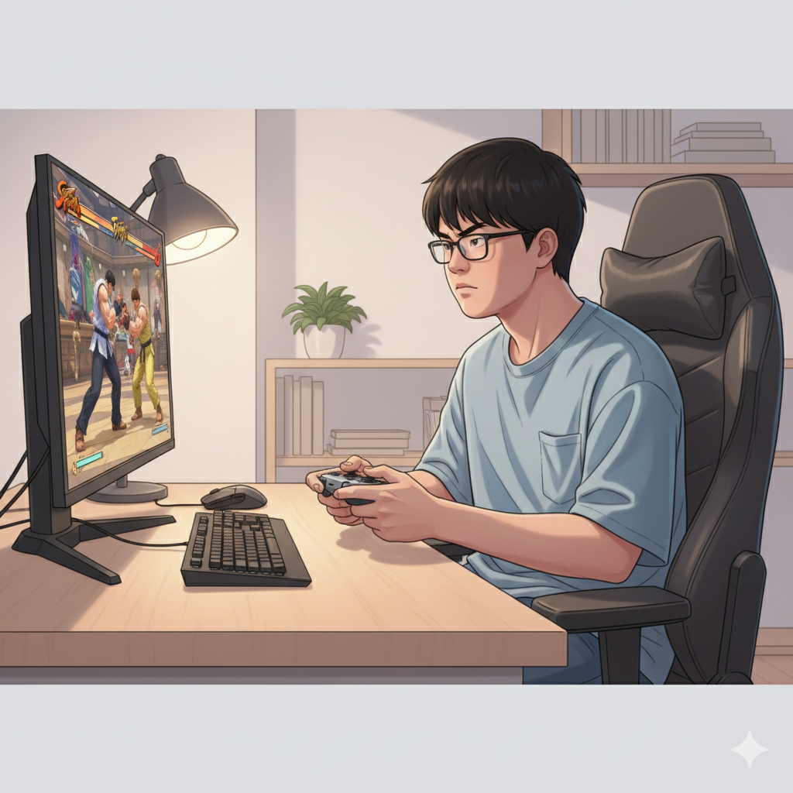
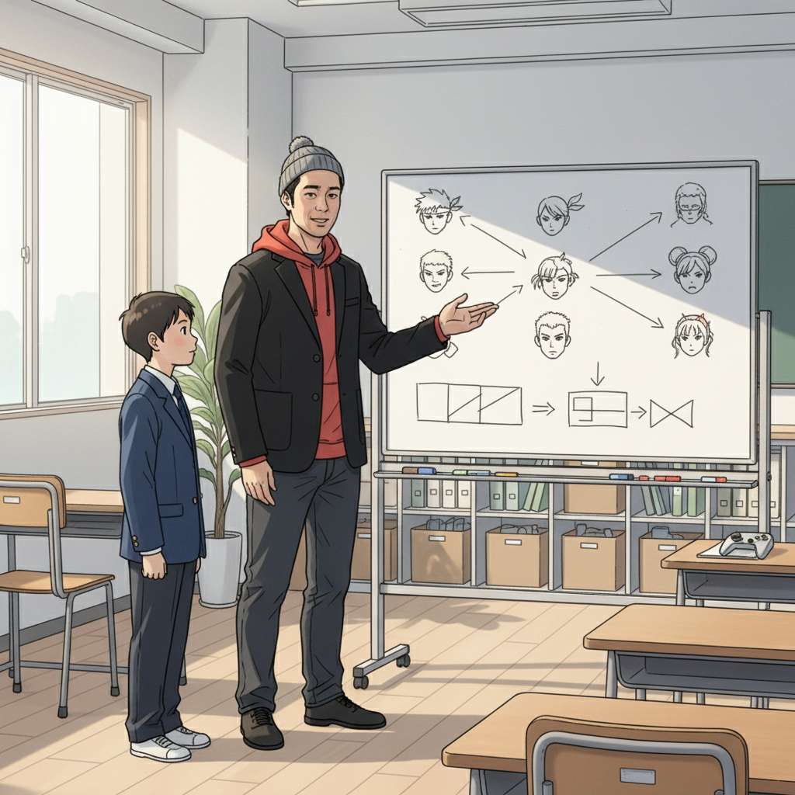
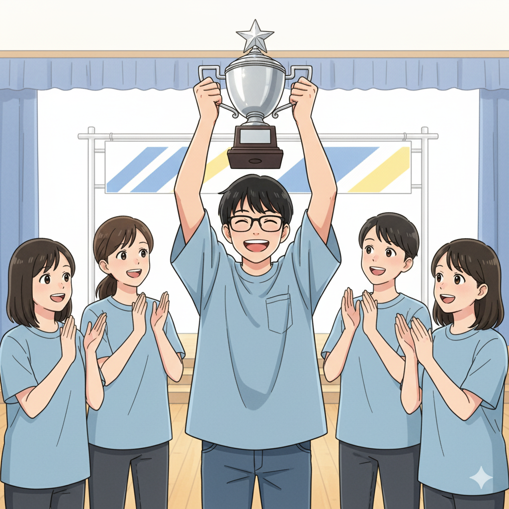
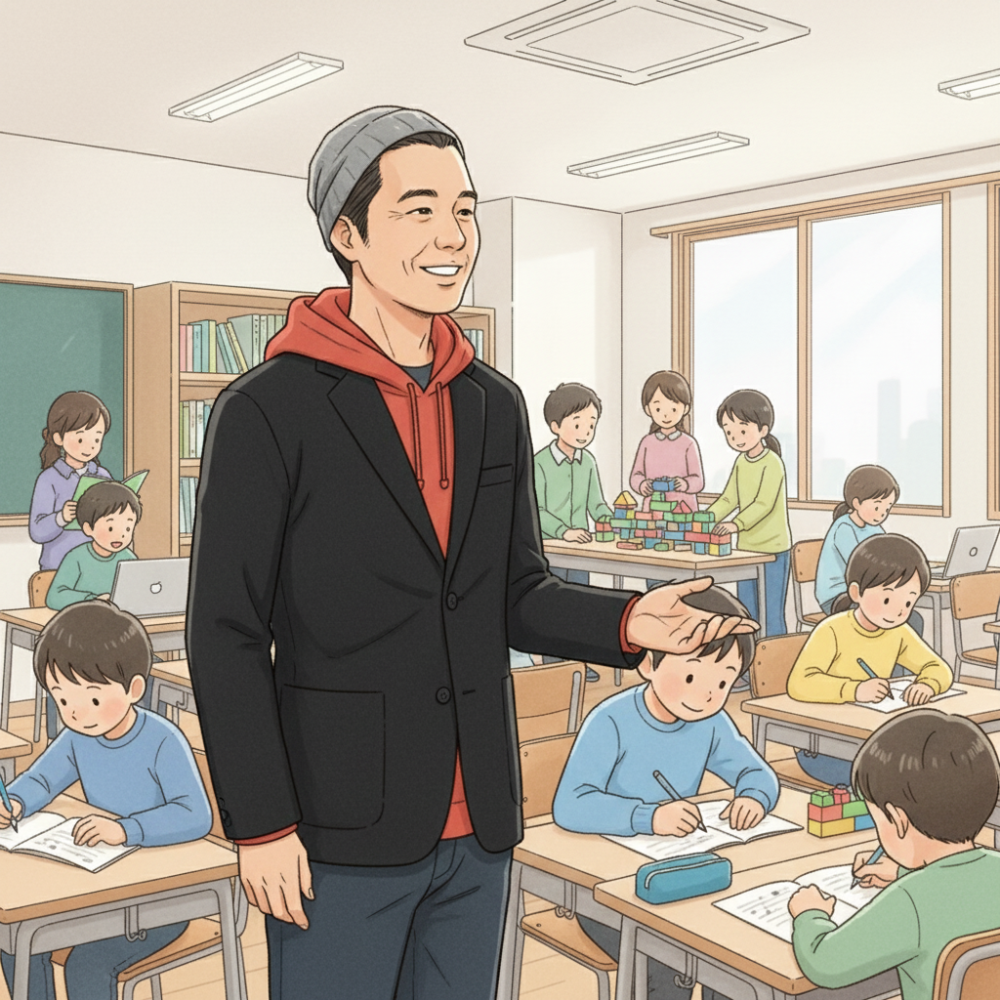

ゲームに没頭する集中力は才能！Y君、ストリートファイター6との出会い (Y君)

「気づいたら、もうこんな時間！？」。Y君が初めてストリートファイター6（SF6）に触れた時のことです。他のことが目に入らないほどのめり込み、ひたすら技を練習し、対戦を繰り返しました。Y君は、小さい頃から一つのことに集中すると周りが見えなくなる特性がありました。学校の授業中は落ち着きがないこともありましたが、ゲームに関しては別。その集中力は、SF6のような瞬時の判断が求められる格闘ゲームにおいて、大きな武器になったのです。
SF6の世界は奥深く、キャラクターの特性を理解し、相手の動きを予測し、適切なタイミングで技を繰り出す必要があります。Y君は、その全てに夢中になりました。オンライン対戦で勝利を重ねるごとに、自信をつけていきました。
if塾との出会いが転機に。集中力をeスポーツの強みに (塾頭)

高校生の時、Y君はif塾の塾頭と出会いました。塾頭は、Y君の集中力と反応速度に目を見張り、「それは素晴らしい才能だ」と伝えました。そして、その才能をeスポーツの世界で活かすことを提案したのです。
if塾では、Y君のように発達特性を持つ子どもたちが、それぞれの才能を伸ばせるように様々なサポートをしています。Y君は、塾頭のアドバイスを受けながら、SF6の戦略を練ったり、プロの試合を研究したり、大会に向けたトレーニングを重ねました。また、集中力を維持するための方法や、プレッシャーに打ち勝つためのメンタルコントロールについても学びました。
「発達特性は決して『障害』なんかじゃない。見方を変えれば、それは誰にも負けない『才能』になるんだ」塾頭はいつもそう言っていました。
仲間との出会い、そして大会優勝へ！(Y君, 塾長)

if塾には、Y君と同じように、様々な才能を持つ仲間たちがいます。プログラミングが得意な子、絵を描くのが得意な子、音楽を作るのが得意な子…。それぞれが自分の得意なことを活かして、互いに刺激し合い、成長しています。
Y君は、if塾で出会った仲間たちとSF6の練習をしたり、大会の情報を交換したりするうちに、孤独を感じることが少なくなりました。同じ目標を持つ仲間がいることで、モチベーションを高く保つことができたのです。
そしてついに、Y君は大きなeスポーツ大会で優勝を果たしました。その時の喜びは、言葉では言い表せないほど大きかったそうです。「自分の才能を信じて、努力すれば、必ず夢は叶うんだ」Y君は、そう確信しました。塾長も自分のADHD/ASDの経験から、Y君の気持ちが痛いほど理解できました。
Y君は現在、プロのeスポーツプレイヤーを目指しながら、if塾で後輩たちの指導も行っています。自分の経験を活かして、同じように才能を持つ子どもたちの成長をサポートしたいと考えているからです。学生起業にも興味があり、ITスキルを学ぶため、秋田のプログラミング教室にも通っています。
君の「好き」を「才能」に変えよう！ (塾頭)

もし、あなたが今、不安を感じていたり、自分に自信が持てなかったりするなら、ぜひif塾に来てみてください。私たちは、あなたの『好き』を見つけ、それを『才能』に変えるお手伝いをします。
if塾では、Y君のように、発達特性を持つ子どもたちが、自分の才能を活かして活躍できる場所を提供しています。eスポーツ、プログラミング、アート、音楽…どんな分野でも構いません。あなたの情熱を注げるものを見つけ、それを磨き上げましょう。
私たちは、あなたの可能性を信じています。さあ、一緒に未来を切り拓きましょう！
if塾では、学生起業を目指す子どもたちのITスキル習得もサポートしています。秋田でプログラミング教室をお探しの方も、ぜひ一度ご相談ください。
🎯 興味を持っていただいた方へ
if塾では、発達特性を持つ子どもたちの「好き」を「才能」に変える教育を行っています。現在の記事内容と実際の活動に大きなズレはありませんが、詳細については直接お問い合わせください。
📌 記事について
この記事は、塾頭による完全自動化への挑戦としてAIが自動生成しています。将来的には塾頭が執筆しているような記事になることを目指しており、現時点では事実と異なる内容が含まれる可能性があります。最新の正確な情報については、お問い合わせフォームよりご確認ください。
🤖 Generated with AI - if塾のブログ自動化プロジェクト